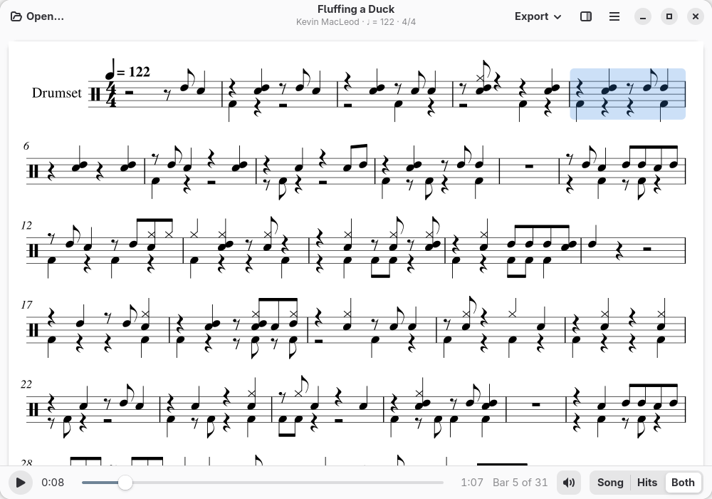

For drummers · Mac and Linux · Free
Drop a song, get the drum sheet music.
Stickler listens to a song and writes down what the drummer plays: kick, snare, toms, hi-hat and cymbals. Read it on screen, play along, or print it.
- On your computerNo account, no upload
- About 15 secondsfor a 4-minute song on a laptop
- Free and open sourceGPL licence
- In three languagesEnglish, Deutsch, Español
How it works
Four steps, nothing to set up.
-
Open a song
Drop an MP3, M4A, FLAC or WAV on Stickler, or choose one.
-
Stickler listens
It finds every hit, then the beat and the bars. About 15 seconds.
-
Read and play along
The sheet music follows the song, bar by bar.
-
Keep it
PDF to print, MusicXML for MuseScore, the drum track to practise with.

Hear it, read it
The first 20 seconds of “Eyesplit”, and what Stickler wrote down for its drums.
Listen for the clicks: each one is a hit Stickler heard.
“Eyesplit” by Shane Ivers (silvermansound.com), licensed under CC BY 4.0; shortened to its first 20 seconds.

How accurate is it?
Good enough to learn a song from, not perfect. Measured on 25 rock, metal and pop songs against sheet music written by people.
Where it is strong
Steady grooves: kick, snare and hi-hat, the tempo and the bars.Where it slips
Fast fills and quiet ghost notes. A wrong tempo or first beat is fixed in the app with one click.What it needs
On its first start Stickler asks to download two models, once. After that it works without the internet.
The models
- ADTOF hears the hits · free for non-commercial use
- 1.3 GB
- Beat This! finds the beat and the bars · MIT licence
- 0.9 GB
- Demucs only to save the drum track · MIT licence
- 1.2 GB
Your computer
- Mac
- Apple silicon, macOS 26
- Windows
- Windows 11 on a 64-bit PC (x64)
- Linux
- a 64-bit PC (x86_64)
- Memory
- about 1 GB while a song is analysed
- Time
- about 15 s for a 4-minute song on a laptop
- Disk
- about 2.2 GB for the models, 1.2 GB more for the drum track


Your songs never leave your computer.
Stickler has no account, no cloud and no statistics. It goes online once, to download its models, and asks before it does. This page sets no cookies either. The privacy statement
Download Stickler
Free – today only!!!11 (just kidding). Which version would you like?
-
Mac
Apple silicon, macOS 26
.dmg: Download · 55 MBmacOS asks once, as Stickler is not from the App Store: how to allow it, step by step.
-
Windows
Windows 11, Intel or AMD (x64)
Windows installer: Download · 170 MBWindows warns once, as the installer is not signed yet: how to get past it, step by step.
-
Ubuntu
26.04 or newer · .deb
.deb: Download · 69 MBsudo apt install ./Stickler-11_amd64.deb -
Fedora
44 or newer · .rpm
.rpm: Download · 72 MBsudo dnf install ./Stickler-11.x86_64.rpm -
Flatpak
Any Linux, best on GNOME
Flatpak: Download · 33 MBflatpak install --user Stickler-11.flatpak -
AppImage
Any Linux, nothing to install
AppImage: Download · 134 MBchmod +x Stickler-11-x86_64.AppImage && ./Stickler-11-x86_64.AppImage
Each button downloads the file from the newest release. Open it with the Software app, or run its line in a terminal, in the folder you downloaded it to. The AppImage needs no installing: right-click it, choose Properties, turn on “Executable as Program”, then open it.
Use one of them, not the Flatpak as well: both would show up in the app menu. The first start downloads the models, about 2.2 GB, once.
Uninstalling
Choose Uninstall Stickler… in the app’s menu: it removes the app with its models; a box removes your settings, recent songs and corrections too. The Flatpak opens the Software app on Stickler’s page: uninstall it there, and choose whether its data goes too. To free the models’ space but keep the app, choose Remove Downloaded Models… instead. Without the app:
- Windows
- In Settings › Apps › Installed apps, choose Uninstall next to Stickler: it asks the same question.
- Mac
- Choose Remove Downloaded Models… with its box ticked, then drag Stickler to the Bin.
- Flatpak
- In a terminal:
flatpak uninstall --delete-data ng.tshia.Stickler - AppImage
- Delete the file, then in a terminal:
rm -r ~/.local/share/stickler ~/.cache/stickler ~/.config/stickler - Ubuntu, Fedora
- Remove it with the Software app, or in a terminal with
sudo apt remove sticklerorsudo dnf remove stickler; then delete its three folders as for the AppImage.
About the author

Niklas Tshiang Tshiananga: drummer, nerd, author. Do you know how hard it is to find sheet music for even slightly niche music? I do, because I searched. Also, I hate subscriptions. Ta-da: with some time and a lot of tokens, this little program came to be. The code is open on GitHub.